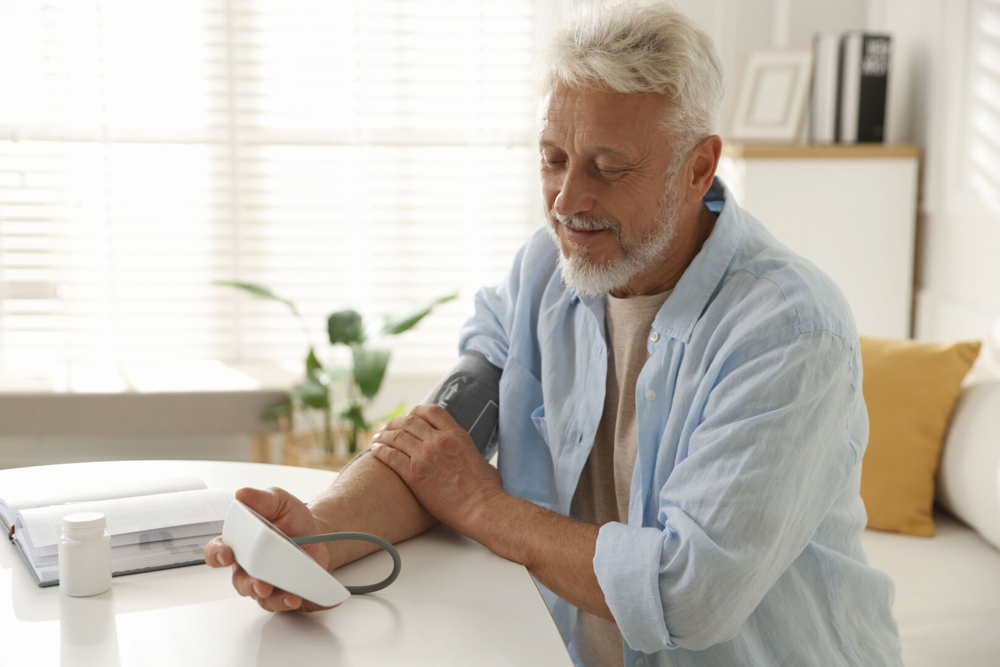
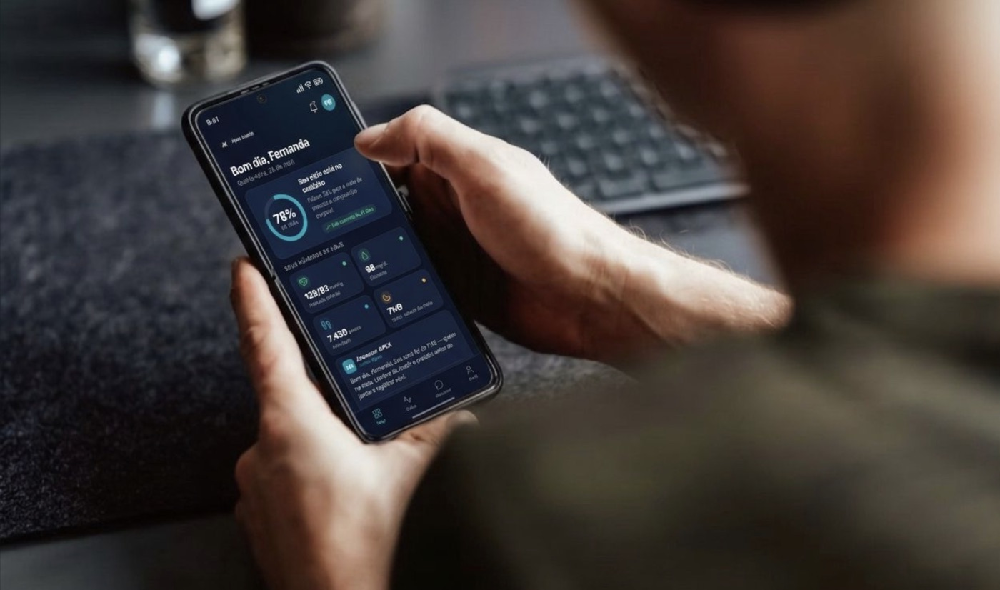

Em destaqueSíndrome CKM e câncer: o elo que poucos comentam
Obesidade, diabetes e doença renal não elevam apenas o risco cardiovascular — aumentam também o de câncer. Entenda a conexão metabólica e o que fazer a respeito.
Ler artigo →O protocolo da Síndrome CKM — a conexão entre hipertensão, diabetes, obesidade e doença renal tratada de forma integrada, com assessor virtual que te acompanha todos os dias.
Entenda · Síndrome Cardiorrenal-Metabólica
A Síndrome Cardiorrenal-Metabólica (CKM) descreve a interação entre hipertensão, diabetes, obesidade e doença renal. Tratadas isoladamente, cada condição já oferece risco. Juntas, elas se potencializam — e a maioria dos pacientes convive com duas ou mais ao mesmo tempo.
O peso do problema
Apesar disso, ainda são tratadas de forma fragmentada — cada especialista cuidando de uma peça, sem visão do conjunto.
Fontes: Ndumele CE et al. Circulation, 2023 (AHA Presidential Advisory) · AHA, Circulation, 2026 — CKM & risco de câncer · SBC / Cardiômetro · ISN Global Kidney Health Atlas.
O que o tratamento certo muda
A boa notícia: a ciência mostra que dá para mudar a trajetória. Não é promessa — é o que grandes ensaios clínicos demonstraram com o tratamento baseado em evidência.
Fontes: DAPA-CKD, NEJM 2020 · EMPA-KIDNEY, NEJM 2023 · UKPDS 35, BMJ 2000.
Para quem

Controle pressórico com monitoramento contínuo e ajustes em tempo real.

Protocolo integrado de dieta, medicação e hábitos com acompanhamento diário.

Composição corporal com bioimpedância seriada e acompanhamento nutricional.

Nefroproteção com controle pressórico e metabólico integrado.

Para quem quer otimizar saúde, composição corporal e bem-estar com base em evidências.
Síndrome Cardiorrenal-Metabólica
A maioria dos pacientes convive com duas ou mais dessas condições ao mesmo tempo. Tratar cada uma isoladamente não funciona — o protocolo Apex Health atua nos quatro pilares da CKM desde o início.
O método
Cada condição tem um alvo mensurável. O protocolo te leva até lá — e mantém você lá.

Cada condição tem um alvo mensurável, com data definida na consulta.
Monitora, lembra e registra. Você nunca está sozinho no protocolo.
Desvio real vira ação: ajuste de dose, teleconsulta, intervenção quando precisa.
O plano clínico
Na consulta, todas as suas condições entram em um painel único: lista de problemas, estágio da Síndrome CKM, risco cardiovascular e renal calculados, metas com prazo e a evolução dos seus exames. O médico enxerga tudo de uma vez — e age sobre o que importa.
Como funciona
Avaliação completa: história clínica, medições, hábitos de vida e objetivos. Exames laboratoriais + bioimpedância no consultório. Primeiras orientações já saem daqui.
Apresentação do protocolo completo após resultados dos exames — presencial ou telemedicina. Dieta, medicações, suplementos, hábitos e cronograma de acompanhamento.
Entre consultas, o assessor virtual monitora aderência à dieta, medicações, suplementos, dados de wearables e hábitos. Alerta o médico se algo sair do caminho.
Reavaliação: bioimpedância, exames de controle, revisão dos dados do assessor virtual. Ajustes no protocolo e — quando a meta é atingida — migração para manutenção.
Seu acompanhamento diário
Todos os dias, o assessor virtual do Apex Health acompanha sua dieta, hidratação, medicações, suplementos, sono e atividade. Se algo sair do protocolo, o médico é alertado antes do próximo retorno.
O médico

Nefrologista e clínico, com foco na Síndrome Cardiorrenal-Metabólica (CKM) — a interação entre hipertensão, diabetes, obesidade e doença renal. MBA em Gestão de Saúde pela FGV. Desenvolveu o protocolo APEX Health para tratar essas condições de forma integrada, com acompanhamento contínuo por assessor virtual.
Testa os próprios protocolos — nos ciclos de preparação de maratona, vive a rotina que prescreve
Assessor virtual desenvolvido por ele — tecnologia a serviço da aderência ao protocolo
Conduta baseada em evidência — guidelines AHA, KDIGO e SBMFC
Apex Health Insights
Artigos e hubs temáticos sobre prevenção, doença renal e a Síndrome CKM — para pacientes e profissionais.

Em destaqueObesidade, diabetes e doença renal não elevam apenas o risco cardiovascular — aumentam também o de câncer. Entenda a conexão metabólica e o que fazer a respeito.
Ler artigo →Mais lidas
Boletim Semanal · Para profissionais
Curadoria semanal das principais publicações em Nefrologia, Cardiologia, Diabetes e Síndrome CKM.
Toda segunda-feira, direto na sua caixa de entrada.
Ao se inscrever, você concorda em receber o boletim por email e com a nossa Política de Privacidade. Você pode cancelar quando quiser.
Perguntas frequentes
CRM-SP 151.041 · RQE 70145 | Assessor virtual proprietário